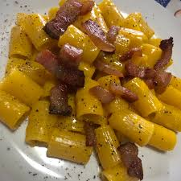

Carbonara

Rigatoni alla carbonara
Here is a simple but tasty dish that is one of the most famous in Italian cuisine! Its speed of preparation and its unique taste made it
famous all over the world but what is the most used recipe in Italy? Let's try to see it using a small twist, instead of spaghetti we will use
some rigatoni!
Ingredients (for two people)
- Rigatoni 160 g
- Guanciale 120 g
- Pecorino romano 70 g
- Yolks 3
- Black pepper to taste
Preparation
-
Once we have prepared the ingredients we will need, we put the water to boil, the choice of salting the water immediately or while it is boiling is left
left the reader.
-
Cut the bacon into cubes, the thickness depends on your taste but if they are too small you will lose a bit of consistency.
Once we have our cubes, place them in a bowl.
- Grate the pecorino and divide the yolks from the whites.
- When the water is boiling we throw in the pasta and check the cooking time, usually the rigatoni takes around 13 minutes
- Let's now start the actual preparation, first let's brown our bacon cubes until they are nice and crunchy.
and they will have released all their fat. We then divide the pieces of bacon and the fat that we keep
- We then move on to the sauce, first beat the eggs and add the black pepper to taste, then add the cheese in small handfuls.
With a whisk we mix vigorously until we obtain a rather dense and bright yellow cream, then add the bacon fat
and we repeat the operation.
- When the pasta is cooked, take a ladle of cooking water and keep it, then drain it. We then combine the pasta with the cream and, little by little,
add the cooking water while mixing everything until the cream has become a sauce that adheres well to the pasta.
Now add the bacon and give it a final stir. The dish is now ready to be served!
- If you want to make the dish more beautiful you can keep a few cubes of bacon and place them after plating with a sprinkling of cheese.